Wistron Digital Twin V2
Phase 3 / 4 視覺證據
本輪瀏覽器渲染、PA Cycle Lab 上游截圖與實際錄影集中檢視。點選影像可開啟原始檔；本輪靜態截圖為 3440×1440。各項 PASS、FAIL、SKIP、PENDING 以測試紀錄為準。
HQ：石材色彩與實景特徵
本址為台北市內湖區行善路 158 號。已查閱的實景來源是緯創 2011 永續報告第 36 頁右下方的 Neihu Headquarters 歷史照片。它支持部分輪廓和材料特徵，不能驗證現況、完整窗數、建築尺寸或入口細節。
開啟官方歷史照片（PDF 第 36 頁） · 查看逐項照片比對 · 來源、授權與待補證據
色彩修正前後

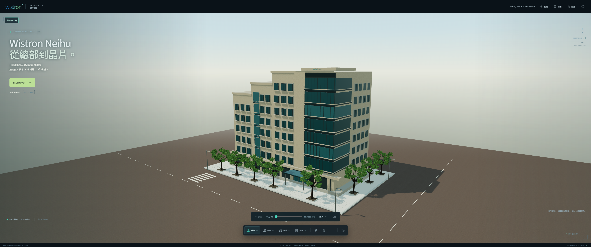

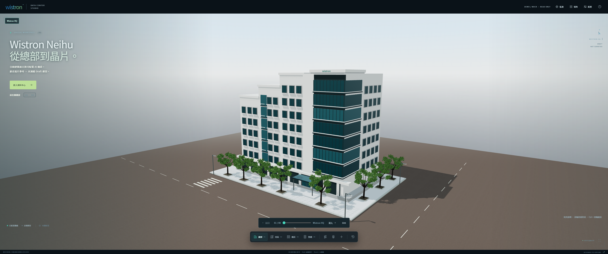
正面、側面、斜角與入口

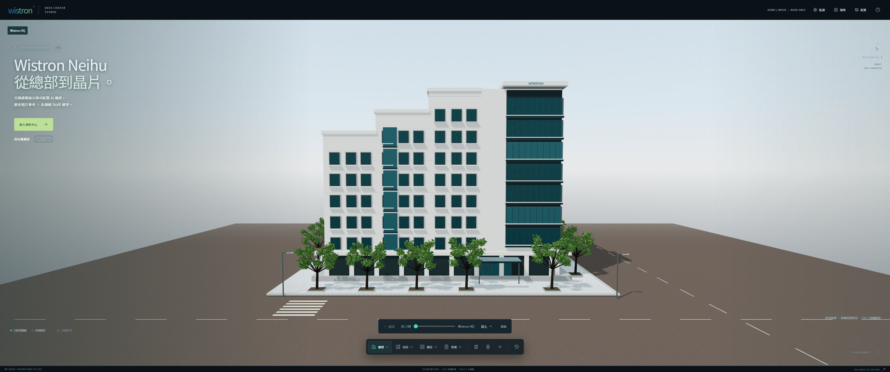

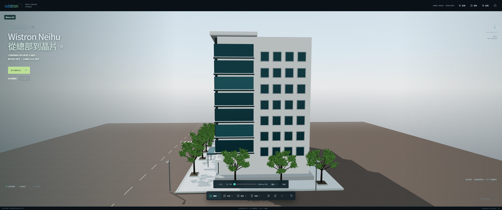

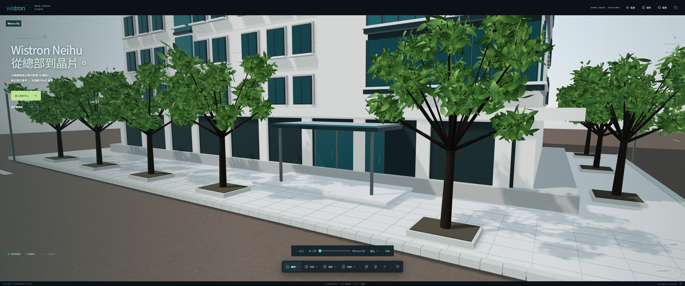
Data Center Hall：1、4、32 Rack
由配置資料產生的多 Row 機房，整合階層選取與需要時才載入的 Rack 細節。布局、配電與冷卻設備為 Draft / DEMO，並非緯創現場的實際機房、OEM 規格或管線圖。

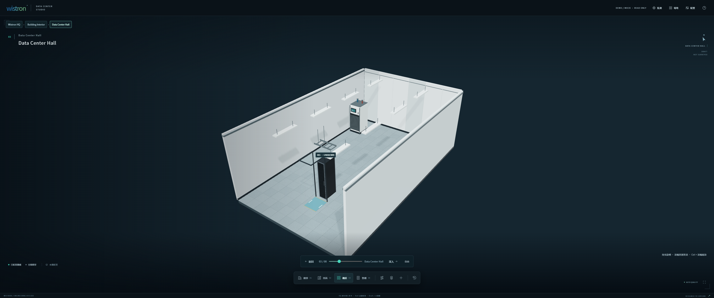

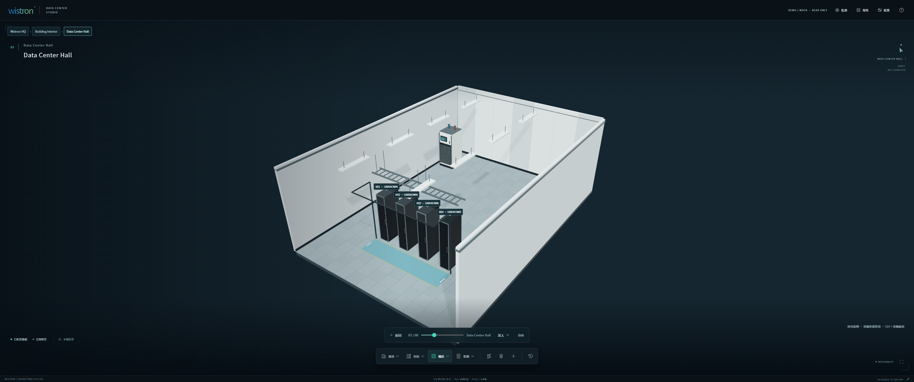

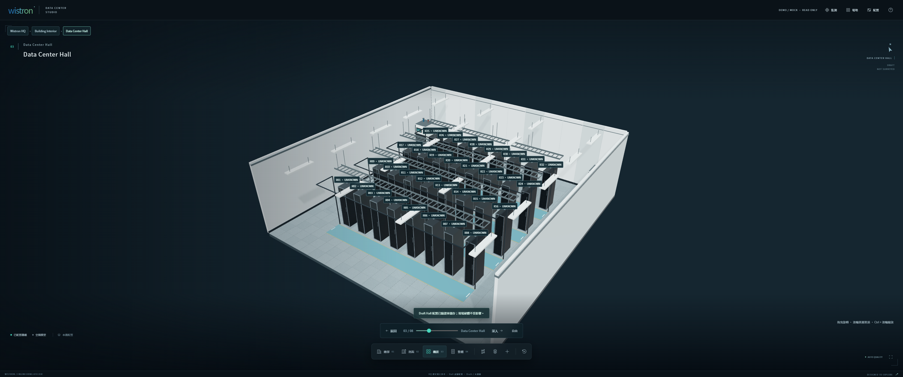

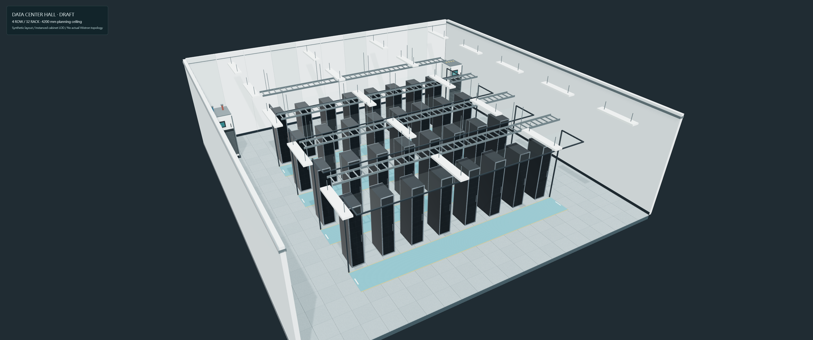

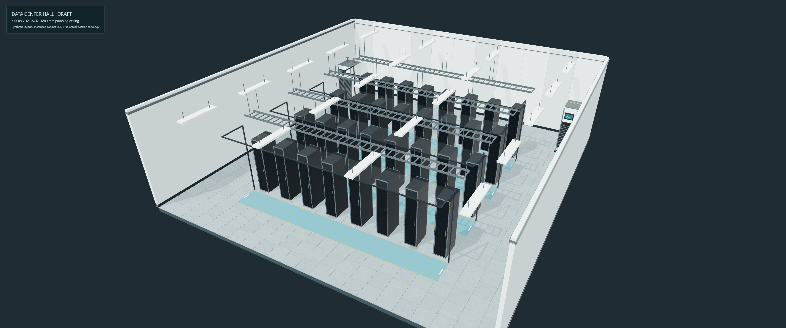
PA Cycle Lab → 本輪 Rack Regression
每組左側為 Phase 0 已保存的 PA Cycle Lab 原始截圖，右側為本輪 Regression 輸出。檢視幾何層次、金屬表面、配線、shader 與組件保留情況；不同鏡頭和背景不能用於像素一致性判定，也不代表 OEM 尺寸已驗證。
完整機櫃 / Three-quarter


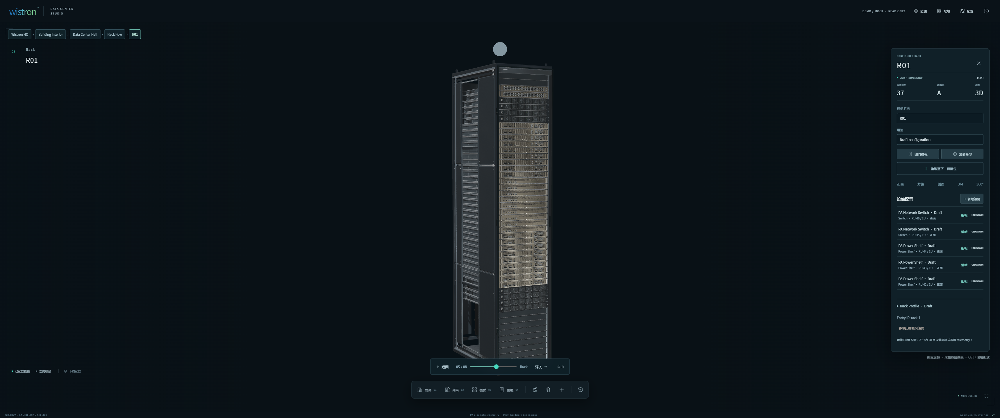
背面 / Rear


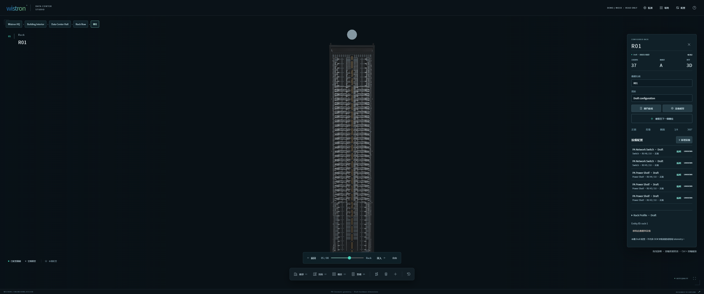
側面 / Side


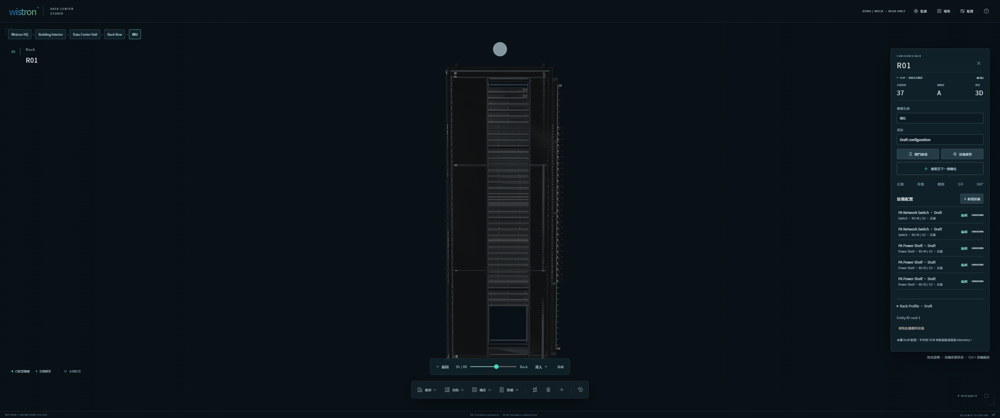
主機板與封裝 / Board

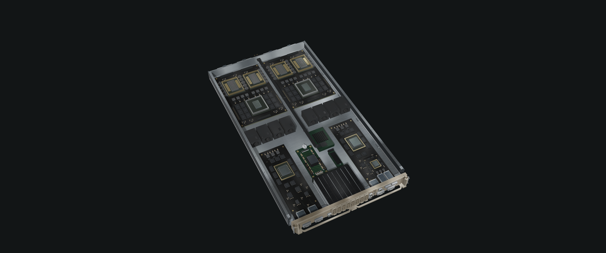

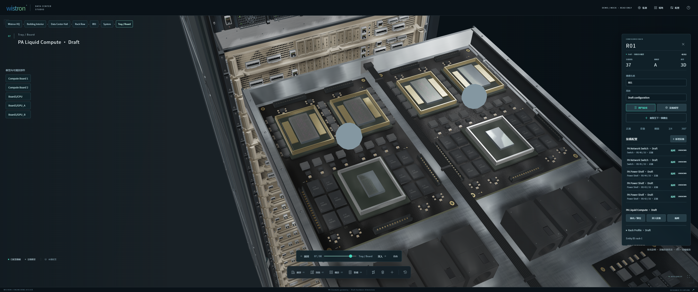
液冷組件 / Cooling

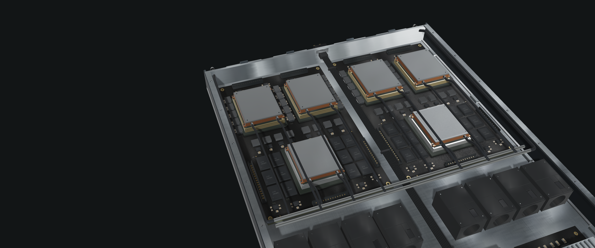

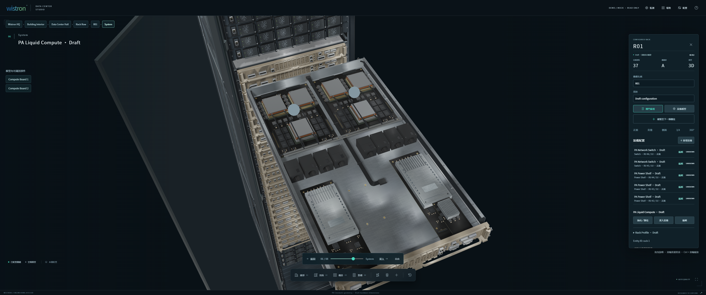
Digital Twin：異常定位與恢復
以下為實際互動頁面上的合成事件示範。設備列表、3D 標記與詳細資訊讀取同一份狀態；Node 是明確標記的 DEMO 邏輯 mapping。照片中的 FAIL 並不是現場故障，也不推論沒有直接資料的 Component 故障。

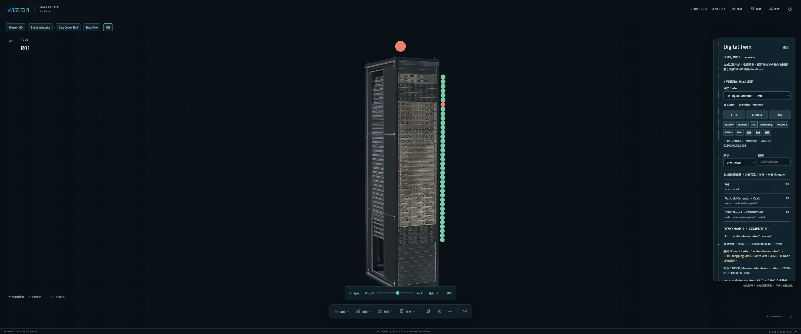

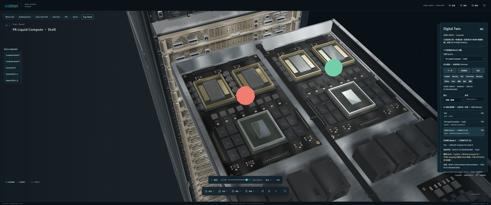

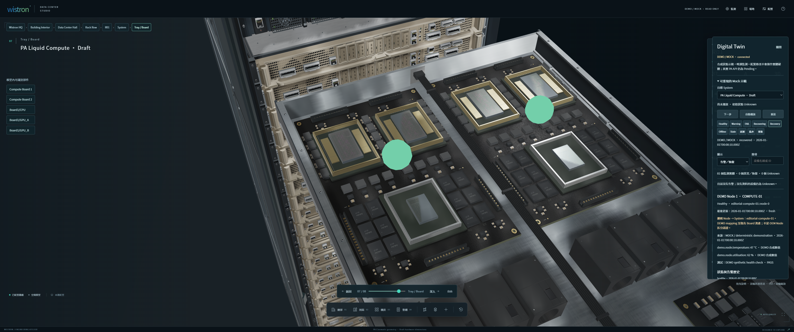

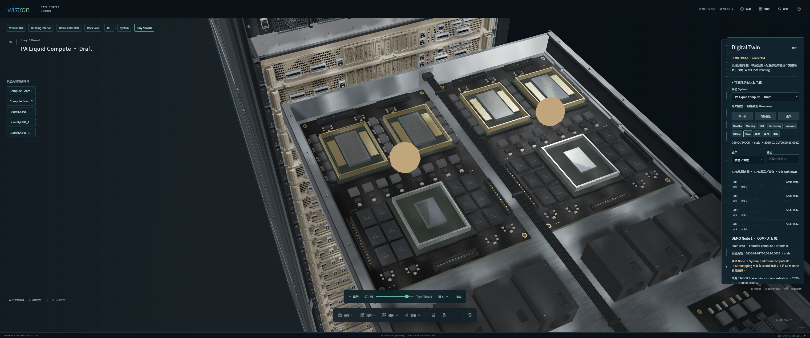

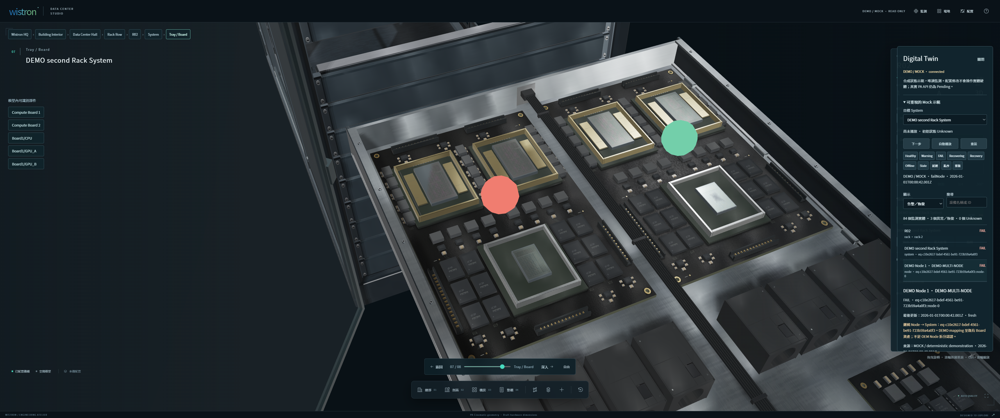
Cinematic 與 HQ → Node 錄影
播放器使用本輪 runner 的 WebM 輸出，沒有自動播放。檔案仍在產出時可能無法播放；播放器存在不代表已完成錄影或驗收。請配合測試報告與實際播放結果判斷。
下載 Cinematic WebM · 示意冷卻流路不代表實測液體流量。
下載 HQ → Node WebM · 連續流程見 journey 紀錄；影片解碼與播放驗證見 delivery 紀錄。
證據範圍與後續資料
本頁提供可檢視的畫面，測試數量與結果由原始紀錄決定。真實 HQ 外觀精準度、OEM 硬體規格與真實 PA Manager API 整合仍依各報告分別標示 PENDING；沒有把未知資料變成 Healthy，也沒有將 MOCK 當成真實連線。